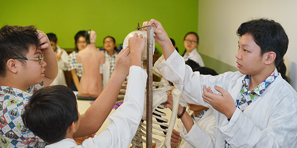
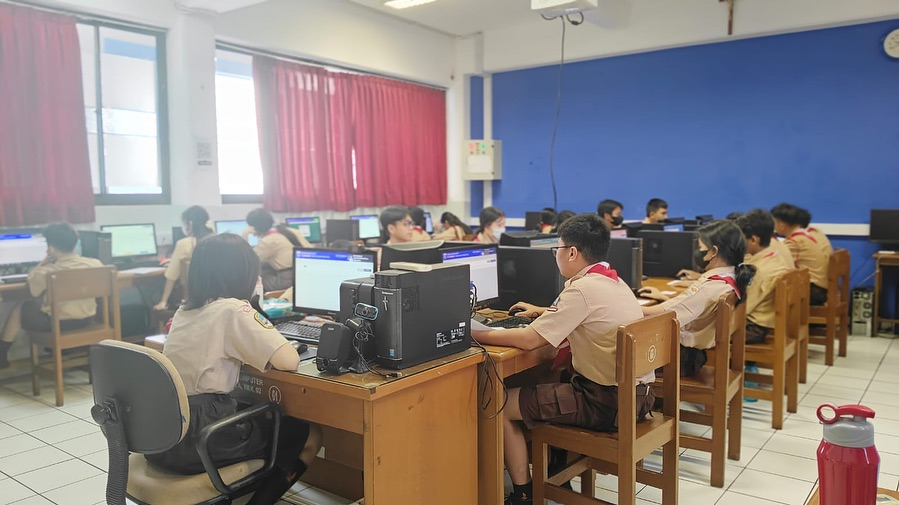
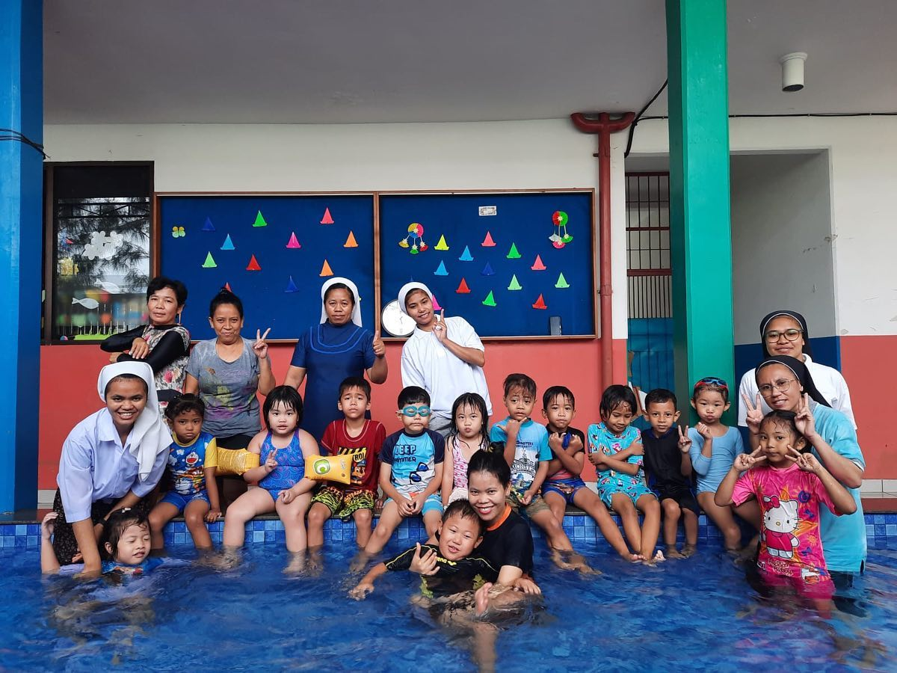
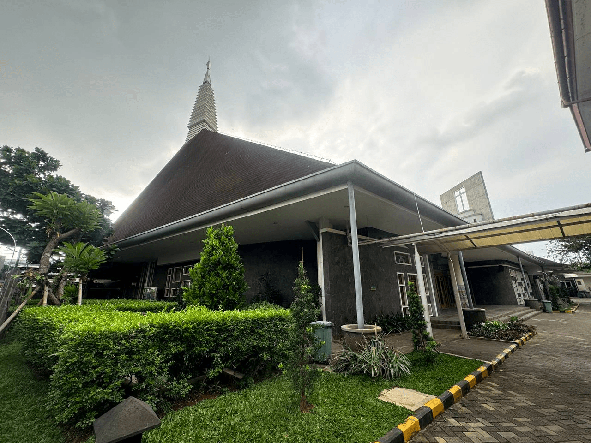
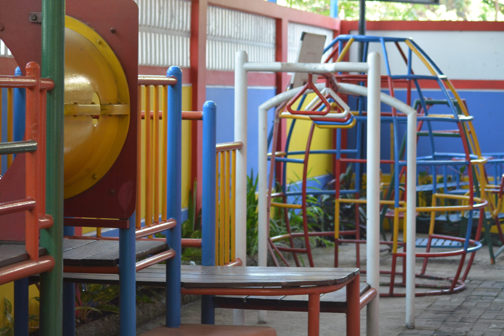
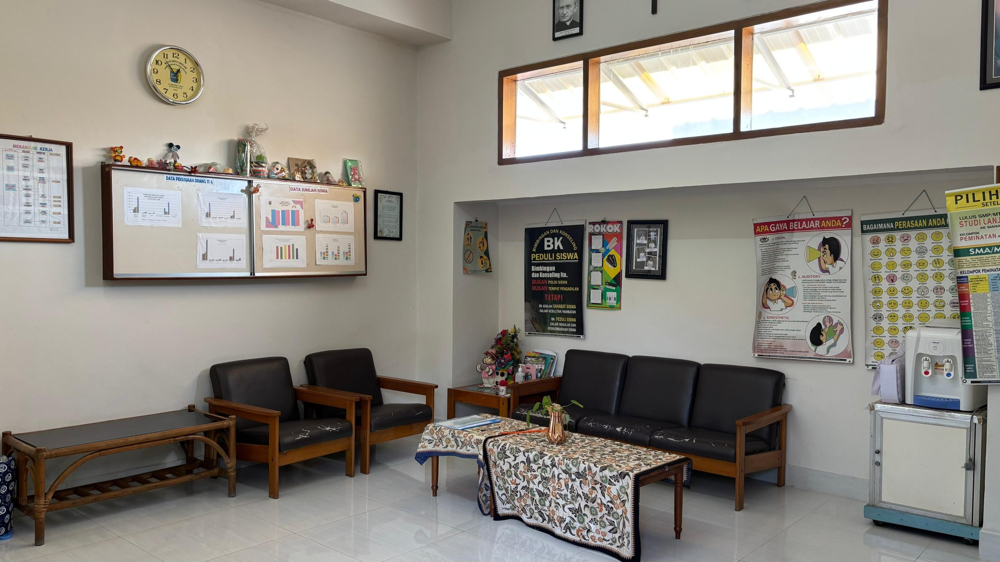
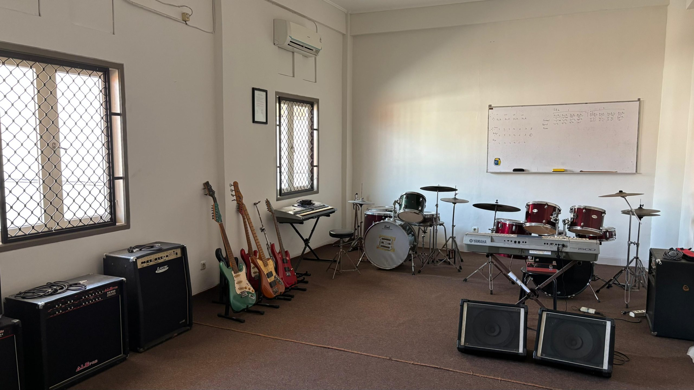

Mengenal
Sekolah
Santo Andreas
Tiga dekade mendidik generasi yang gembira, cerdas, dan peduli — dengan iman sebagai fondasi dan keunggulan sebagai tujuan.
Iman & Pengetahuan
Membentuk Keluhuran Budi
Visi Sekolah
Iman yang kokoh, pengetahuan yang mendalam, dan keunggulan dalam segala bidang adalah tiga pilar yang tidak terpisahkan dalam membentuk manusia seutuhnya.
Misi Sekolah
Menghasilkan Pribadi yang Utuh & Unggul
Pribadi Beriman & Berkarakter
Menanamkan nilai-nilai Kristiani, integritas, dan budi pekerti luhur sebagai fondasi kehidupan yang tak tergoyahkan.
Pribadi Unggul Akademik
Mendorong pencapaian akademik tertinggi melalui kurikulum yang dinamis, guru kompeten, dan semangat belajar tanpa henti.
Pribadi dengan Kecerdasan Sosial
Membangun kemampuan berempati, berkomunikasi, dan berkolaborasi — karena kecerdasan sejati mencakup kepekaan terhadap sesama.
Pribadi yang Peduli Lingkungan
Menumbuhkan rasa tanggung jawab terhadap bumi dan lingkungan, karena generasi masa depan adalah penjaga ciptaan Tuhan.
Perjalanan Panjang
Menuju
Keunggulan
Sejak 1990, Santo Andreas telah menorehkan sejarah panjang dalam dunia pendidikan Katolik di Jakarta Barat.
Pendirian Sekolah
Sekolah Santo Andreas resmi berdiri di kawasan Kedoya Selatan, Jakarta Barat, dengan tekad untuk menghadirkan pendidikan Katolik berkualitas bagi masyarakat sekitar.
Pembukaan Jenjang TK
Menyambut antusiasme orang tua yang semakin besar, Santo Andreas membuka jenjang Taman Kanak-Kanak untuk mendampingi tumbuh kembang anak sejak usia dini.
Pembukaan Jenjang SMP
Merespons kebutuhan alumni SD yang ingin melanjutkan di lingkungan yang sama, SMP Santo Andreas resmi dibuka dan melengkapi jenjang pendidikan yang ditawarkan.
Akreditasi A Nasional
Sekolah Santo Andreas meraih akreditasi A dari Badan Akreditasi Nasional — pengakuan resmi atas kualitas pendidikan, manajemen, dan fasilitas yang terus berkembang.
Renovasi & Modernisasi
Gedung sekolah direnovasi secara menyeluruh, lab komputer dan sains diperbarui, dan ruang-ruang belajar modern dihadirkan untuk mendukung generasi digital.
Melangkah ke Era Baru
Dengan lebih dari 2.500 alumni dan ribuan orang tua yang telah mempercayakan pendidikan putra-putrinya, Santo Andreas terus melangkah maju dengan semangat Gembira · Cerdas · Peduli.
Lingkungan Belajar yang
Modern & Lengkap
Setiap ruang di Santo Andreas dirancang untuk memaksimalkan potensi dan kenyamanan siswa dalam belajar, berkreasi, dan bertumbuh.

Laboratorium Sains
Dilengkapi peralatan modern untuk eksperimen kimia, fisika, dan biologi. Mendorong rasa ingin tahu ilmiah sejak dini.

Laboratorium Komputer
Komputer terbaru dengan koneksi internet cepat, mendukung pembelajaran digital, coding, dan literasi teknologi.

Lapangan Olahraga
Lapangan yang digunakan untuk senam pagi bersama, jogging, futsal dan tempat pelaksanaan pelajaran PJOK.
Lapangan Basket
Lapangan khusus untuk pelaksanaan permainan ekskul basket.

Perpustakaan
Koleksi ratusan buku, majalah, dan referensi digital. Ruang baca nyaman yang membangun budaya literasi dari usia dini.

Kolam Renang
Kolam Kecil yang terbuka bagi para murid TK St. Andreas, bertujuan untuk melatih sportivitas siswa mulai dari usia dini.

Gereja St. Andreas
Tempat ibadah yang tenang dan sakral, tempat komunitas sekolah bertemu dalam doa, misa, dan pembinaan rohani bersama.

Gua Maria
Tempat rohani sakral untuk doa rosario di depan hadapan patung Bunda Maria.

Aula Bethlehem
Aula Luas yang digunakan untuk acara-acara tertentu sekolah, dan panggung pertunjukan untuk mengembangkan bakat kreatif siswa.

Aula 101
Aula terbesar di sekolah yang umumnya digunakan untuk acara-acara besar.

Ruang OSIS SMP
Ruang OSIS yang diselenggarakan bagi siswa-siswi yang mengikuti kegiatan-kegiatan OSIS.

Playground
Fasilitas yang bersedia bagi siswa-siswi TK yang bertujuan untuk "bermain" dengan menumbuhkan kreativitas dan eksplorasi

Ruang BK
Ruang BK St. Andreas hadir sebagai tempat yang aman dan nyaman bagi siswa untuk berkonsultasi

Ruang Musik
tempat melatih, memproduksi, mengekspresikan, dan menampilkan karya musik secara optimal bagi siswa-siswi

Kantin Sekolah
Menyediakan akses bagi siswa-siswi untuk membelikan makanan dan minuman secara langsung di Sekolah
Siap Bergabung dengan
Keluarga Santo Andreas?
Daftarkan putra-putri Anda dan mulailah perjalanan luar biasa bersama kami.